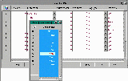

Fields:
File Name - desired name for the log. will be followed by an underscore and the File Num.Description - a meaningful description
File Handle - internally assigned
Max File Num - file numbers will start at 0 and increment to the Max File Num, then roll to 0 again.
Current Num - automatically displays the number of this file, from 0 to MaxFileNum.
How Often - an integer to fill in the phrase, 'every Increment(s) '
Click Here to see a screen shot of this menu.

Increment - choose from the list of intervals on the Increments Menu
Current Stat - automatically increments. When greater than How Often, log will roll.
Was Stat - used internally. compared to Today Menu data. If not the same, Current Stat increments and Was Stat is set to Today Menu data.
Log Type - brings up the Log File Types Menu with these options:
a+ - append or create a file to read/write
w+ - create a file to read/writeProcess - brings up the Process Type Menu, which displays the four system processes
GUI - priority of 10, polled for activity approximately every 1/4 sec or every 250ms
CTRL - priority of 12, polled for activity approximately every 1/10 sec or every 100ms
SORT - priority of 13, polled for activity approximately every 1/20 sec or every 50ms
SERV - priority of 11Name Type - a pull down into the Interval Menu. If the value is Absolute, and the Increment is Mday, the log will roll every day and be given the date in the log name.
Ex. A Comm log generated on the 14th of the month will be named Comm.14 .
EXAMPLE: TO CREATE A LOG FOR MESSAGING, ROLLING EACH DAY
1. Select Utility Menu from the Main Menu
2. Select Administrator Utilities from the Utility Menu
3. Select Log Files from the Administrator Utilities Menu
4. Type "InfoLog" in the File Name Field of the first empty record.
5. Type "Messaging Log File" in the Description field.
6. Type 7 in the MaxFileNum.
Click Here to return to the top of the page.
Copyright © 2001 Fortna Inc. All rights reserved.